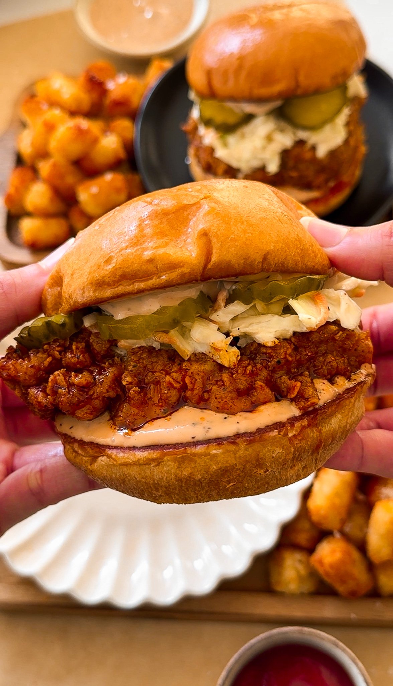

Dinner
NASHVILLE HOT CHICKEN SANDWICHES
PREP TIME: 30 minutes
COOK TIME: 1 HOUR
TOTAL TIME: 1 HOUR 30 MINUTES
YIELDS: 4-6 SANDWICHES
The hot chicken craze is taking over the food scene like wildfire but
let me tell you, the best Nashville chicken you can get is the one you
make at home and even better! From the crispy flakey fried chicken to
the creamy coleslaw and tangy sauce, this sandwich is built to
perfection in the flavor AND texture department. Now let’s dive into
the secret formula for Nashville Hot Chicken Sandwiches!
Jump to Recipe
Nashville Hot Chicken Sandwich
The hot chicken craze is taking over the food scene like wildfire but
let me tell you, the best Nashville chicken you can get is the one you
make at home and even better! From the crispy flakey fried chicken to
the creamy coleslaw and tangy sauce, this sandwich is built to
perfection in the flavor AND texture department. Now let’s dive into the
secret formula for Nashville Hot Chicken Sandwiches!
Ingredients
CHICKEN
-
2 large chicken breasts, about 1.5 pounds
-
peanut or vegetable oil, for frying
Dry
-
1 cup all purpose flour
-
3 tablespoons cornstarch
-
2 teaspoons garlic powder
-
2 tablespoons chili powder
-
2 teaspoons salt
-
2 teaspoons dry mustard powder
-
1 teaspoon black pepper
-
1 teaspoon baking powder
WET
-
3/4 cup buttermilk
-
1 large egg
-
2 tablespoons vinegar-based hot sauce
-
1/4 cup pickle juice
-
1 teaspoon baking powder
SPICY OIL
-
1 tablespoon light brown sugar
-
2 1/2 tablespoons cayenne powder, add more to taste
-
2 tablespoons chili powder
-
1 teaspoon dry mustard powder
-
1 teaspoon garlic powder
-
1 teaspoon salt, more to taste
-
3/4 cup frying oil
COLESLAW
-
3 cups coleslaw blend or 2 cups shredded green cabbage, 1/2 cup
purple cabbage, 1/2 cup shredded carrots
-
1/4 cup mayonnaise
-
1/2 to 1 tablespoon yellow mustard, adjust to taste
-
salt, to taste
-
black pepper, to taste
-
1 tablespoon lemon juice or white vinegar
-
1/2 to 1 tablespoon granulated white sugar
SAUCE
-
1/2 cup mayonnaise
-
1/4 cup ketchup
-
2 teaspoons Worcestershire sauce
-
1 teaspoon black pepper
-
1/2 teaspoon garlic powder
OTHER
-
4 brioche buns
-
unsalted butter, for toasting buns
-
pickles